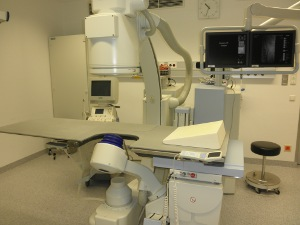
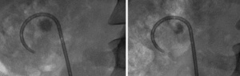

You are here: Urology Textbook > Surgery (procedures) > ESWL
Extracorporeal Shock Wave Lithotripsy (ESWL)
First description of ESWL 1981: (Chaussy et al, 2002 (Reprint)).
Indications for ESWL
- Kidney stones of less than 2.5 cm in size
- Proximal ureter stones
- Distal ureter stones
Contraindications to ESWL
Absolute contraindications to ESWL:
- Coagulation disorders
- Platelet aggregation inhibitors (e.g. ASS)
- Pregnancy
- Aortic aneurysm
- Untreated urinary tract infection
- Stone imaging with ESWL not possible
Relative contraindications to ESWL:
- Urinary tract obstruction. ESWL on small ureteral stones may be done even with urinary tract obstruction
Physical Principles of Extracorporeal Shock Wave Lithotripsy (ESWL)
|  |
The principle of ESWL are external generated shock waves, which are directed into the patient's body and focused on the target (kidney or ureter stone). Three different generator types for shock wave lithotripsy can be distinguished:
Electromagnetic ESWL:
The shock wave is generated by an electromagnetic coil, which moves a membrane (like a loudspeaker). An acoustic lens system reflects and focuses the shock wave. Examples: Dornier Doli, Lithostar Siemens.
Electrohydraulic ESWL:
The shock wave is generated by an underwater spark discharge, which is reflected by an ellipsoid. Example: Dornier HM3.
Piezoelectric ESWL:
A piezoelectric crystal is mechanically deformed if electricity is applied. The crystals are aligned along spherical dish, which allows the focusing of the shock wave. Example: PiezoLith of Wolff.
Surgical Technique of Extracorporeal Shock Wave Lithotripsy
Prerequisites for ESWL:
- Upper urinary tract obstruction should be treated by the placement of a ureteral stent (DJ). The insertion of a DJ should also be considered before treatment of a large kidney stone, since the fragments may obstruct the ureter ("Steinstraße"). Small ureteral stones with moderate hydronephrosis may be treated without insertion of a DJ, since fragmentation may resolve the hydronephrosis.
- Coagulation and platelet function should be normal: PTT, PT, blood count.
- Normal blood pressure
- Sterile urine, perioperative antibiotic prophylaxis is not necessary.
- Patient has signed informed consent
- Stone can be located with the imaging system
Monitoring of the patient:
During ESWL with intravenous analgesia, the oxygen saturation, ECG and blood pressure monitoring is recommended.
Analgesia:
The better the analgesia, the higher the stone free results after ESWL due to minimizing patient movements (pain, respiration). The minimum is a conscious sedation with e.g. midazolam and piritramide.
Imaging for Stone Localization:
Imaging for stone localization can be done with ultrasound, fluoroscopy or the combination of both.
Dosage of Shock Waves:
Normally, 2000–4000 shock waves are used with a frequency of 60–120/min. Comparative studies found a higher efficacy of ESWL with a lower frequency of shock waves (60 vs. 120/min). Shock waves generate microscopic cavitation bubbles in the focus, which rapidly disintegrate spontaneously. With a high frequency of shock waves, the energy of the next shock wave is lost due to the cavitation bubbles of the former shock wave, leaving the kidney stone intact.
The power of the shock wave depends on the patient's pain threshold or is set according to the recommended maximum value by the manufacturer of the ESWL maschine. A pause of several days should be in between of treatment sessions.
Follow-up after ESWL
Imaging (ultrasound, KUB X-ray) is necessary to evaluate stone clearance, upper urinary tract obstruction or to detect renal hematoma.
|  | Partial desintegration after extracorporeal shock wave lithotripsy (ESWL): imaging before and after a treatment session of ESWL (3000 shock waves). |
Complications after ESWL
Blood pressure:
Low blood pressure with nausea and vomiting is possible.
Bleeding:
Bleeding leads to hematuria (often) or to retroperitoneal hematoma (rare). The extent of renal injury is dependent on the number of shock waves, shock wave energy, size and location of the stone. Risk factors of the patient for retroperitoneal hematoma are coagulation disorders, platelet dysfunction, use of antiplatelet agents (aspirin) or arterial hypertension. Rarely, a pseudoaneurysm of the renal artery may develop.
Urinary tract obstruction:
Fragments of desintegrated stones may obstruct the ureter ("Steinstraße") and cause urinary colic.
Infections:
Urinary tract infection with fever. Urosepsis is possible, especially together with upper urinary tract obstruction.
Renal Failure:
Renal failure is a rare complication after ESWL, caused by the combination of the above mentioned complications. Very rarely, nephrectomy is necessary due to complications (loss of kidney function, renal abscess and/or massive hemorrhage).
| Urologic Surgery | Index | Abbreviations |
Index: 1–9 A B C D E F G H I J K L M N O P Q R S T U V W X Y Z
References
- Chaussy u.a. 2002 CHAUSSY, C. ; SCHMIEDT, E. ; JOCHAM, D. ; BRENDEL, W. ; FORSSMANN, B. ; WALTHER, V.:
- First clinical experience with extracorporeally induced destruction
of kidney stones by shock waves. 1981.
In: J Urol
167 (2002), Nr. 5, S. 1957–60
 Deutsche Version: ESWL
Deutsche Version: ESWL